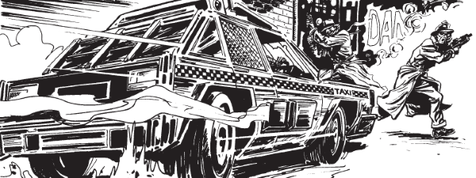

Logan's Run meets cyberpunk gumshoe noir in the hard-boiled Zero City, where finger-pistoled mercenary cabbie Tanner gets immediately embroiled in a case involving a glamorous woman in distress. But can she be trusted?
Art by Kev Hopgood
| Story Title | Parts | Pages | w indicates a wraparound coverCovers | Year(s) | Issues | Writer | Artist | Colourist | Letterer |
|---|---|---|---|---|---|---|---|---|---|
| Night Zero | 10 | 51 | 610: Kev Hopgood 616: Kev Hopgood 2 | 1988-1989 | Reprints: M338 (supplement)607-616 | John Brosnan | Kev Hopgood | [b&w] | Jack Potter |
No supertitle.Beyond Zero | 12 | 61 | 631: Kev Hopgood 645: Kev Hopgood 2 | 1989-1990 | Reprints: M340 (supplement)630-634,645-649,665-666 | John Brosnan | Kev Hopgood | [b&w] | Jack Potter |
| Lost in Zero | 1 | 8 | 0 | 1990 | 2KA'91 | John Brosnan | Kev Hopgood | <-- | Gordon Robson |
No supertitle.Below Zero | 15 | 75 | 0 | 1991 | 731-745 | John Brosnan | Kev Hopgood | <-- | Gary Gilbert |
| >> Features << | |||||||||
Interview with John Brosnan & Kev Hopgood.The Making of Night Zero | 1 | 3 | 0 | 1989 | 2KA'90 | editorial | + photograph. Kev Hopgood | [b&w] | n/a |
| year | episodes | pages |
| 1977 | 0 | 0 |
| 1978 | 0 | 0 |
| 1979 | 0 | 0 |
| 1980 | 0 | 0 |
| 1981 | 0 | 0 |
| 1982 | 0 | 0 |
| 1983 | 0 | 0 |
| 1984 | 0 | 0 |
| 1985 | 0 | 0 |
| 1986 | 0 | 0 |
| 1987 | 0 | 0 |
| 1988 | 1 | 5 |
| 1989 | 19 | 96 |
| 1990 | 3 | 19 |
| 1991 | 15 | 75 |
| 1992 | 0 | 0 |
| 1993 | 0 | 0 |
| 1994 | 0 | 0 |
| 1995 | 0 | 0 |
| 1996 | 0 | 0 |
| 1997 | 0 | 0 |
| 1998 | 0 | 0 |
| 1999 | 0 | 0 |
| 2000 | 0 | 0 |
| 2001 | 0 | 0 |
| 2002 | 0 | 0 |
| 2003 | 0 | 0 |
| 2004 | 0 | 0 |
| 2005 | 0 | 0 |
| 2006 | 0 | 0 |
| 2007 | 0 | 0 |
| 2008 | 0 | 0 |
| 2009 | 0 | 0 |
| 2010 | 0 | 0 |
| 2011 | 0 | 0 |
| 2012 | 0 | 0 |
| 2013 | 0 | 0 |
| 2014 | 0 | 0 |
| 2015 | 0 | 0 |
| 2016 | 0 | 0 |
| 2017 | 0 | 0 |
| 2018 | 0 | 0 |
| 2019 | 0 | 0 |
| 2020 | 0 | 0 |
| 2021 | 0 | 0 |
Comic strip data (excludes other content):